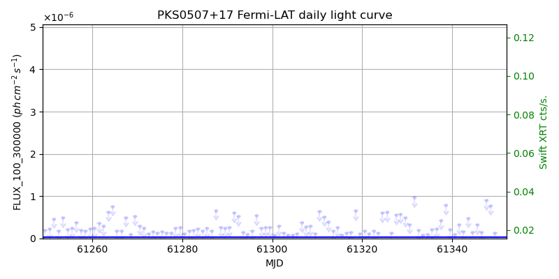
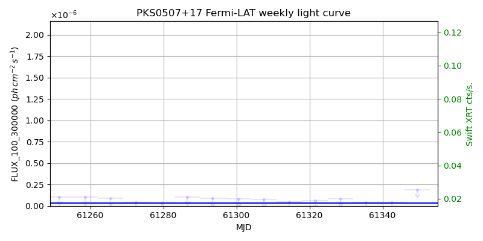
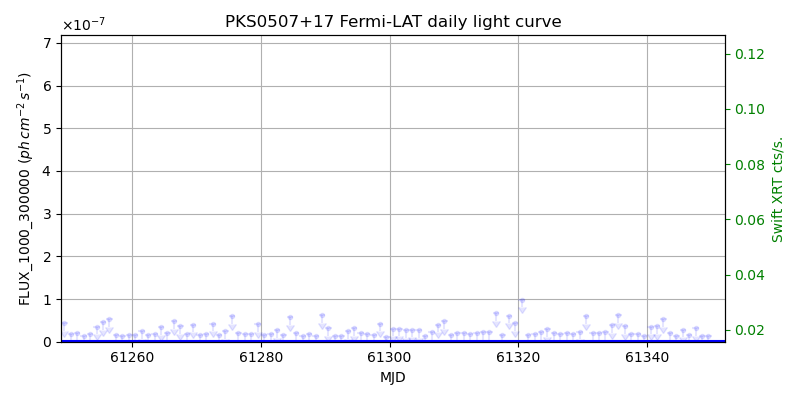
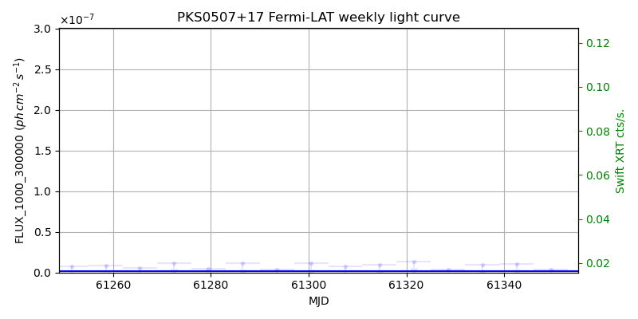

LAT Lightcurve site: https://fermi.gsfc.nasa.gov/ssc/data/access/lat/msl_lc/source/PKS_0507p17
Swift site: https://www.swift.psu.edu/monitoring/source.php?source=PKS0507+17
NED: Query
Time of last update of this page: UT: 2026-11-13 16:16 (MJD: 61357.678)
| Property | Value |
|---|---|
| R.A. | 5:10:02.40 |
| Dec. | 18:00:43.2 |
| z | 0.416 |
| 3FGL SpectrumType | PowerLaw |
| 3FGL PL Index | 2.41 |
| 3FGL Flux_100_300000 | 3.43e-08 1 / (s cm2) |
| 3FGL Flux_1000_300000 | 1.34e-09 1 / (s cm2) |
| 3FGL Flux >200 GeV | 7.62e-13 1 / (s cm2) |
| 3FGL Extrap. Crab >200 GeV | 0.00 |
| 3FGL Flux After EBL Absorption >200GeV | 1.67e-13 1 / (s cm2) |
| 3FGL EBL Crab Fraction >200GeV | 0.00 |

| MJD | dMJD | Flux | dFlux | Frac3FGL | FracCrab>200GeV | EBLFracCrab>200GeV |
|---|---|---|---|---|---|---|
| 61348.50 | 0.50 | 7.75e-07 | 0.00e+00 | 0.00 | 0.00 | 0.00 |
| 61349.50 | 0.50 | 1.32e-07 | 0.00e+00 | 0.00 | 0.00 | 0.00 |
| 61350.50 | 0.50 | 7.45e-07 | 0.00e+00 | 0.00 | 0.00 | 0.00 |
| 61351.50 | 0.50 | 6.29e-07 | 0.00e+00 | 0.00 | 0.00 | 0.00 |
| 61352.50 | 0.50 | 3.87e-07 | 0.00e+00 | 0.00 | 0.00 | 0.00 |

| MJD | dMJD | Flux | dFlux | Frac3FGL | FracCrab>200GeV | EBLFracCrab>200GeV |
|---|---|---|---|---|---|---|
| 61321.50 | 3.50 | 6.42e-08 | 0.00e+00 | 0.00 | 0.00 | 0.00 |
| 61328.50 | 3.50 | 8.48e-08 | 0.00e+00 | 0.00 | 0.00 | 0.00 |
| 61335.50 | 3.50 | 4.38e-08 | 0.00e+00 | 0.00 | 0.00 | 0.00 |
| 61342.50 | 3.50 | 4.02e-08 | 0.00e+00 | 0.00 | 0.00 | 0.00 |
| 61349.50 | 3.50 | 1.91e-07 | 0.00e+00 | 0.00 | 0.00 | 0.00 |

| MJD | dMJD | Flux | dFlux | Frac3FGL | FracCrab>200GeV | EBLFracCrab>200GeV |
|---|---|---|---|---|---|---|
| 61348.50 | 0.50 | 1.40e-08 | 0.00e+00 | 0.00 | 0.00 | 0.00 |
| 61349.50 | 0.50 | 1.39e-08 | 0.00e+00 | 0.00 | 0.00 | 0.00 |
| 61350.50 | 0.50 | -1.00e+00 | 0.00e+00 | 0.00 | 0.00 | 0.00 |
| 61351.50 | 0.50 | 1.59e-08 | 0.00e+00 | 0.00 | 0.00 | 0.00 |
| 61352.50 | 0.50 | 8.10e-08 | 0.00e+00 | 0.00 | 0.00 | 0.00 |

| MJD | dMJD | Flux | dFlux | Frac3FGL | FracCrab>200GeV | EBLFracCrab>200GeV |
|---|---|---|---|---|---|---|
| 61321.50 | 3.50 | 1.35e-08 | 0.00e+00 | 0.00 | 0.00 | 0.00 |
| 61328.50 | 3.50 | 3.88e-09 | 0.00e+00 | 0.00 | 0.00 | 0.00 |
| 61335.50 | 3.50 | 1.00e-08 | 0.00e+00 | 0.00 | 0.00 | 0.00 |
| 61342.50 | 3.50 | 1.08e-08 | 0.00e+00 | 0.00 | 0.00 | 0.00 |
| 61349.50 | 3.50 | 3.45e-09 | 0.00e+00 | 0.00 | 0.00 | 0.00 |
--------------------------------------------------------- Using user-supplied coords: 5:10:02.40 18:00:43.2 2000 --------------------------------------------------------- FLWO UT night of: 2026-11-14 Local Sid. @ Midnight: 03:09 Sunset (-15.0) (local, UT): 18:35 01:35 Sunrise (-15.0) (local, UT): 05:42 12:42 Moonrise (local, UT): Moonset (local, UT): 20:50 03:50 Moon phase: 0.22 --------------------------------------------------------- AzTime LSID UT Obj_el Obj_az Mn_el Mn_az Sep. --------------------------------------------------------- 18:35 21:44 01:35 -8.0 63.0 20.1 218.2 153.2 19:05 22:14 02:05 -1.2 67.2 16.0 223.7 153.1 19:35 22:44 02:35 4.0 71.1 11.6 228.6 152.9 20:05 23:14 03:05 10.0 74.8 6.9 233.2 152.7 20:35 23:44 03:35 16.2 78.4 2.0 237.3 152.6 21:05 00:14 04:05 22.5 82.0 -2.2 241.2 152.4 21:35 00:44 04:35 28.8 85.6 -9.0 244.8 152.2 22:05 01:14 05:05 35.2 89.4 -14.6 248.2 151.9 22:35 01:44 05:35 41.6 93.5 -20.4 251.4 151.7 23:05 02:14 06:05 48.0 98.1 -26.2 254.5 151.5 23:35 02:44 06:35 54.3 103.5 -32.1 257.5 151.2 00:05 03:14 07:05 60.4 110.4 -38.1 260.6 150.9 00:35 03:45 07:35 66.2 119.7 -44.2 263.8 150.7 01:05 04:15 08:05 71.3 133.5 -50.2 267.1 150.4 01:35 04:45 08:35 75.1 154.8 -56.3 270.9 150.1 02:05 05:15 09:05 76.4 183.7 -62.4 275.3 149.8 02:35 05:45 09:35 74.4 211.2 -68.4 281.1 149.5 03:05 06:15 10:05 70.2 230.4 -74.2 289.9 149.1 03:35 06:45 10:35 64.8 242.8 -79.6 306.2 148.8 04:05 07:15 11:05 58.9 251.4 -83.2 343.5 148.5 04:35 07:45 11:35 52.7 257.9 -82.1 35.1 148.2 05:05 08:15 12:05 46.4 263.1 -77.4 61.2 147.8 05:35 08:45 12:35 40.1 267.5 -71.8 73.4 147.5 05:42 08:52 12:42 38.7 268.4 -70.5 75.2 147.4 --------------------------------------------------------- Dark hours >55 deg.: 4.76 srcstart (UT): 2026-11-14 06:38 srcend (UT): 2026-11-14 11:24